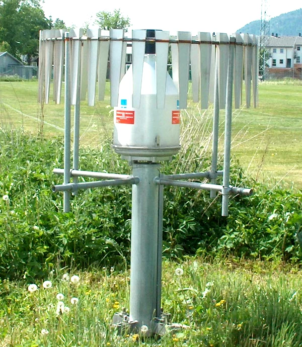
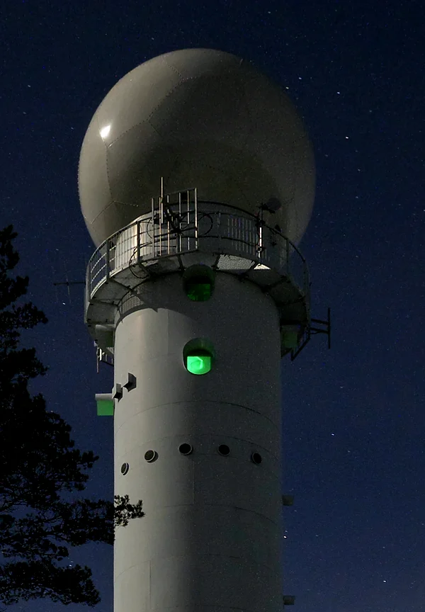

Link 10227 at Torslanda, 1.8 km: one end sends, the other receives.
≈ 1/500 of the power, still received
How the data are used
From signal to rain.
Sent minus received: the attenuation, after erroneous values are filtered out.
Each step is wet or dry; the dry level comes from the dry steps around it.
The fade per km grows with rain by a power law (frequency, polarization); inverted, it gives the rain rate.
Many crossing links, interpolated into a rain map.
Link frequency
—
—
The general approach, sect. 2.1: the paper describes it; it does not apply it.
On the right: each link's measured fade at 15:06 on 28 July, as its brightness.
the fade against each link's own 24 h median: our baseline, not the paper's method
The obstacle
Open link data: few, or slow.
Link data usually stay with operators and the groups they work with.
Open data set
Where
Links
Sampling
Špačková et al. 2021
Switzerland
1
≈ 4 s
Fencl et al. 2020, 2021
Czechia
6
≈ 10 s
Overeem 2019
Netherlands
≈ 2500
15 min statistics
Habi 2020
Israel
2
—
van Leth et al. 2018
Netherlands
3
—
OpenMRG
Sweden
364
10 s · true coordinates
as the paper lists them (§1) · “—”: not stated there
The data set · links
364 links around Gothenburg.
364links
728sub-links
418nodes
1041 km of paths, over about 2800 km²
Table 1 · the area as a convex hull · June–August 2015
Short links run at high frequency
brighter on the map: higher frequency
728 sub-links, the data set's metadata · Figs. 4c, 5a
Nodea mast with antennas
Sub-linkone direction, sender to receiver
Linkboth directions
Hopall links between two nodes
A real mast · not this network
Photo: Fabian Horst · CC BY-SA 4.0
The data set · collection
Polled every 10 s.
Pollstandard SNMP, 150 nodes at a time, all within ± 1 s (likely)
Collectinside the operator's network, no firmware changes
Deliverto Ericsson every minute; forwarded to SMHI
on the map: nodes flash as they are polled · the order is our guess
~ 1 minfrom rain to data
just over a minute, by design · §4.1
10B/sper node · 4180 B/s for all 418
about, on average · §4.1
≈ a text message every 14 s
The data set · gauges and radar
Gauges below, radar above.
11gauges
10 city gauges · every minute
1 SMHI gauge · every 15 min
7 weighing, 3 tipping-bucket · §2.2

A Geonor weighing gauge · not GbgA
Photo: Solas · CC BY-SA 3.0
≈ 1.2km upthe radar's lowest beam, over the centre
composite, mostly Vara, 78 km away · Table 3

A weather radar
Finland, not Vara · Photo: S. Viinamäki · CC BY-SA 4.0
almost four Eiffel Towers up
2 km boxes, every 5 min · gauge-corrected
Case · 28 July 2015 · Torslanda
One storm, three sensors.
First the link (14:57:20), then the gauge (14:58–59)
1.1 mm in a minute (15:04–05); sub-link 115 ≈ 27 dB down (15:06)
The radar: no rain over the gauge, heavier rain a few km northreason unknown; misalignment the most likely · §4.4
After: the gauge at zero (15:22), the link still recoveringlikely wet antennas, its position or the whole-path view · §4.4
Results · collection
Near-complete records.
99.99%of 10 s steps had link data
from ≥ 1 sub-link · Table 4
100%SMHI gauge, 15 min steps
Table 4
99.6%radar, 5 min steps
Table 4
93 % of sub-links delivered data ≥ 99 % of the time
Fig. 6a · eight links never gave both levels (§4.1)
51 steps with no link data at all · Table 4
≈ 8.5 minutes in three months
Results · the summer
One summer, in numbers.
Concentrated around the mean: “likely … dry stable conditions”
The left tail: “where the information relevant for rainfall estimation lies”
≈ 30dBmedian minus minimum, per sub-link, on average
0 to 54.6 · §4.2
“Mostly stratiform precipitation”
A few values above 40 dBZ, a common threshold for convective rain
A small peak near −15 dBZ “might be caused by clutter”
−30 dBZ, the radar's floor, left out as in Fig. 8 · §4.2
≈ 260mmover the summer; rain in 6 % of 15 min intervals
Abstract · 6 %: city weighing gauges, mean, ≥ 0.1 mm · Table 6
Tipping buckets (soft): mean distinctly lower, 219 vs 263 mm
Open CC BY-SA 4.0, on Zenodo
Dense ≥ 10 sub-links per km² downtown
Fast a reading every 10 s, true coordinates
Complete 93 % of sub-links ≥ 99 % of the time
“Unique, providing data for many operational [microwave links] at high temporal resolution and with precise coordinates, along with gauge and radar data.” — the paper, §1
Thank you.
the paper doi.org/10.5194/essd-14-5411-2022
Slides rebuilt from the paper · not by the authors
Earth System Science Data · 2022
OpenMRG
Open data from Microwave links, Radar, and Gauges for rainfall quantification in Gothenburg, Sweden
Jafet C. M. Andersson · Jonas Olsson · Remco (C. Z.) van de Beek · Jonas Hansryd